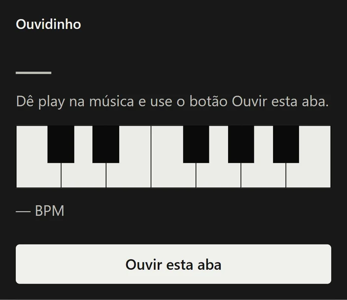
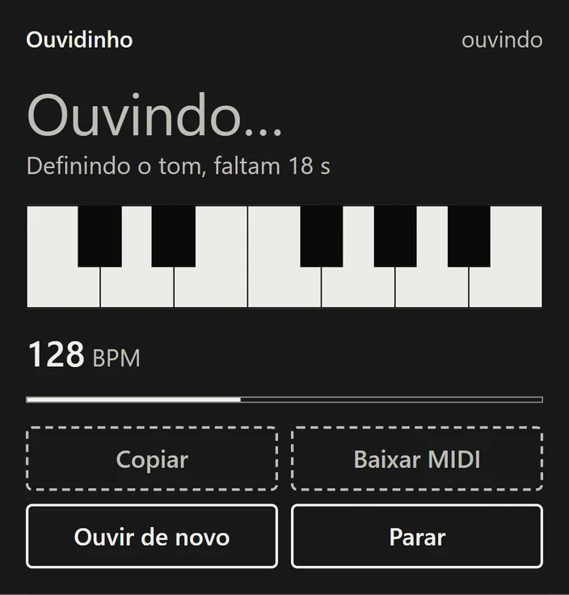
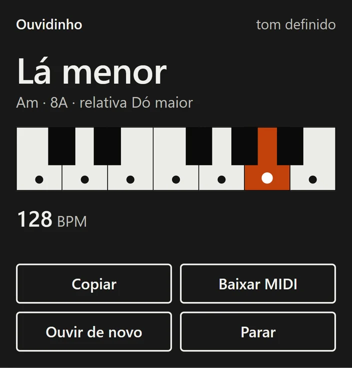
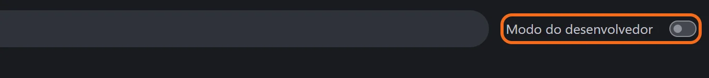
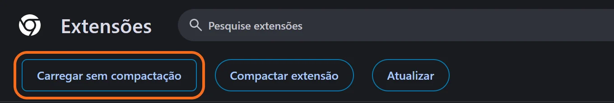
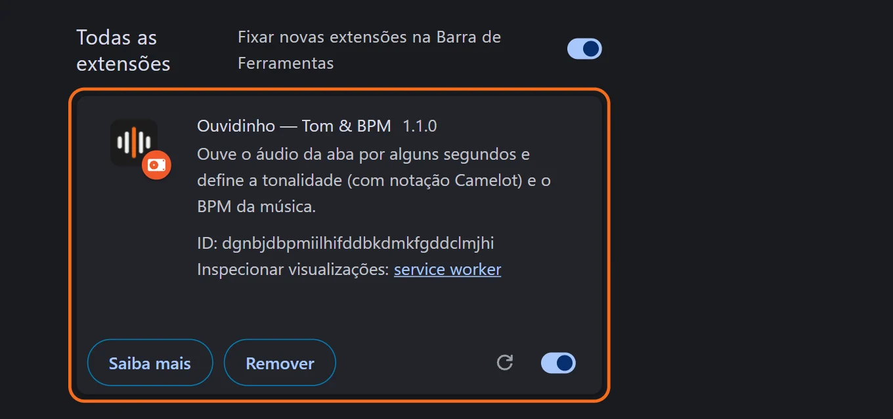

ouvidinho
Descobre o tom e o BPM da música que está tocando na aba do Chrome.
Baixar a extensão
Arquivo .zip, grátis · Chrome, Edge, Brave e Opera



Instalação
-
01
Extraia o .zip que você baixou. Fica uma pasta chamada
ouvidinho. -
02
Abra
chrome://extensionse ligue o Modo do desenvolvedor.
-
03
Clique em Carregar sem compactação e escolha a pasta
ouvidinho.
-
04
Pronto. O Ouvidinho aparece na lista e o ícone fica na barra do navegador.

Guarde a pasta num lugar fixo: o navegador carrega a extensão a partir dela.